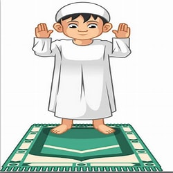

أركان الاسلام
إقامة الصّلاة وهي عمود الدّين، وأوّل ما يُحاسَب عليه العبد المسلم يوم القيامة الصّلاة، فإن صَلحت صَلح سائر العمل والعبادة، والصّلاة هي الصلة بين العبد وربّه، ومعنى ركن إقامة الصلاة أن يعتقد الإنسان اعتقاداً جازماً أنّ الله قد أوجب وفرض على كلّ مسلمٍ بالغٍ عاقلٍ أهلٌ للتكليف خمس صلواتٍ مفروضةٍ في اليوم واللّيلة.[٣] وعلى المسلم أن يُؤدّي الصّلوات الخمس المفروضة حسب وقتها وهيئتها وكيّفيتها، وأنّ يكون على طهارةٍ، والصّلوات المفروضة هي صلاة الفجر، وصلاة الظّهر، وصلاة العصر، وصلاة المغرب، وصلاة العشاء، وتمثّل إقامة الصلاة نافلةً كانت أو فرضاً صِدقَ وصحة التّوجُّه إلى الله -تبارك وتعالى- وحدَه لا شريك له في الأمور جميعها، مع صدق التوكّل عليه، وصدق اللّجوء إليه.
